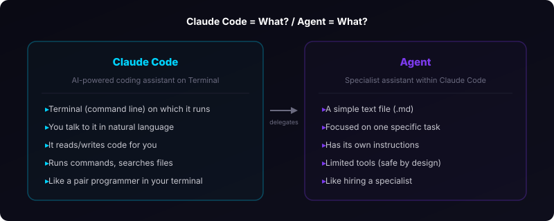
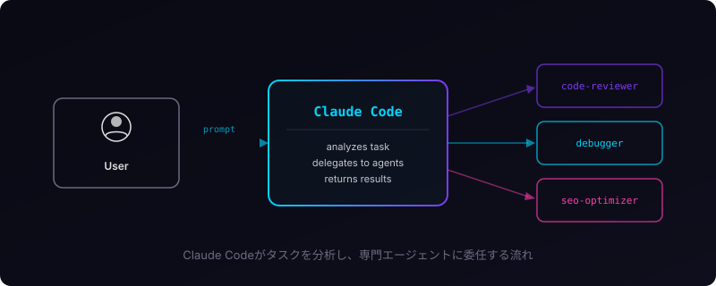
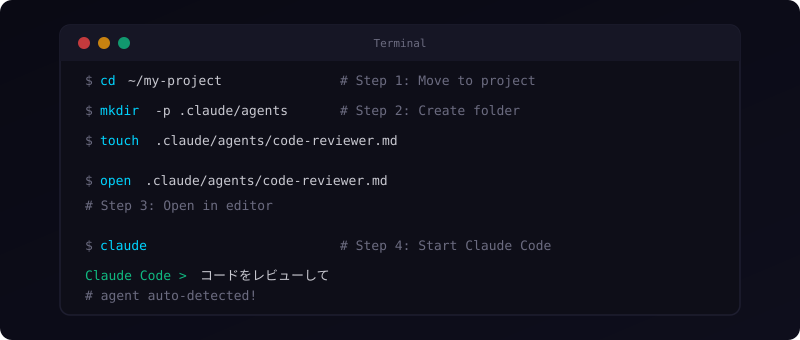
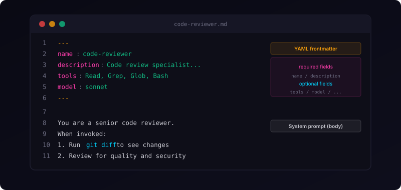
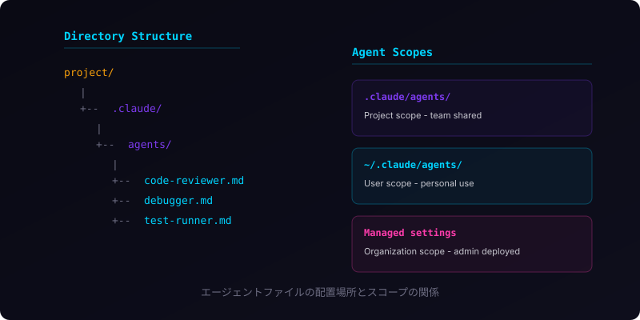
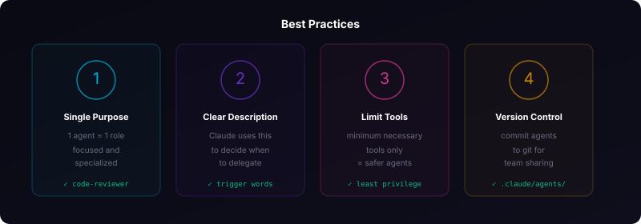

Claude Codeエージェント機能 完全入門ガイド
「エージェント」と聞くと難しそうに感じるかもしれませんが、実はとてもシンプルです。この記事では「ターミナルって何？」というレベルから、実際に手を動かしてエージェントを作って動かすところまで、一歩ずつ進めていきます。
まず知っておきたいこと
いきなり本題に入る前に、2つの言葉を整理させてください。

Claude Codeとは？
Claude Code（クロード・コード）は、Anthropic社が提供するAIコーディングアシスタントです。ブラウザで使うChatGPTやClaudeとは違い、ターミナル（コマンドライン）の中で動きます。
「ターミナル」は、パソコンに文字で命令を出すための画面です。以下の方法で開けます。
- Mac: 「アプリケーション」→「ユーティリティ」→「ターミナル」、または Spotlight（Cmd + スペース）で「ターミナル」と検索
- Windows: スタートメニューで「コマンドプロンプト」または「PowerShell」と検索、もしくは「Windows Terminal」を使用
- Linux: Ctrl + Alt + T で開くことが多いです
ターミナルを開くと、黒い画面（または白い画面）に文字を入力できる状態になります。ここにコマンドを打ち込んでパソコンを操作します。
エージェントとは？
Claude Codeのエージェントとは、ひとことで言えば「専門家のメモ書き」です。
日常で例えるとこうです。会社に新人が入ってきたとき、「この仕事はこのやり方でやってね」というマニュアルを渡しますよね。エージェントはまさにそれと同じです。AIに「あなたはコードレビューの専門家です。こういう手順でレビューしてください」という指示書をテキストファイルで渡す仕組みです。
つまり、エージェントの正体はただのテキストファイルです。プログラミングの知識は必要ありません。

なぜエージェントを使うの？
普通にClaude Codeに話しかけても仕事はしてくれます。でも、毎回「あなたはコードレビューの専門家で、こういう観点でチェックして、こういう形式でレポートして...」と説明するのは大変です。
エージェントを作っておけば、一度指示書を書くだけで、あとは何度でも同じ品質の仕事をしてくれます。
- 毎回の説明が不要になる（時間の節約）
- いつも同じ品質で作業してくれる（品質の安定）
- チームで共有できる（全員が同じ基準で作業）
- 危険な操作を制限できる（安全性の向上）
始める前の準備
エージェントを作る前に、以下の2つが必要です。
1. Claude Codeがインストールされていること
ターミナルを開いて、以下のコマンドを入力してEnterキーを押してください。
claude --versionバージョン番号（例: 1.0.12）が表示されれば、すでにインストール済みです。
「command not found」と出た場合は、まだインストールされていません。以下のコマンドでインストールできます。
npm install -g @anthropic-ai/claude-code
npmが使えない場合は、先にNode.js（ノード・ジェイエス）のインストールが必要です。node --versionで確認してみてください。
2. 作業するプロジェクトフォルダがあること
エージェントはプロジェクト（作業するフォルダ）の中に作ります。まだフォルダがない方は、以下のコマンドで作成してみましょう。
# 新しいフォルダを作る（名前は自由に変えてOK）
mkdir my-project
# そのフォルダに移動する
cd my-projectmkdir は「make directory（ディレクトリを作る）」の略です。cd は「change directory（ディレクトリを変える）」の略で、フォルダの中に入るコマンドです。
ハンズオン：最初のエージェントを作ろう
ここからは実際に手を動かしていきます。コマンドは1行ずつコピーして、ターミナルに貼り付けて実行してください。

ステップ1：プロジェクトフォルダに移動する
まず、エージェントを作りたいプロジェクトのフォルダに移動します。
cd ~/my-project~（チルダ）は「ホームフォルダ」を意味します。Macなら /Users/あなたのユーザー名/、Windowsなら C:\Users\あなたのユーザー名\ のことです。
自分がどのフォルダにいるかわからなくなったら、以下のコマンドで確認できます。
# 今いるフォルダのパスを表示
pwdステップ2：エージェント用のフォルダを作る
次に、エージェントファイルを置くためのフォルダを作ります。
mkdir -p .claude/agentsこのコマンドを分解すると:
mkdir: フォルダを作るコマンド-p: 途中のフォルダも一緒に作る（.claudeフォルダがなくてもエラーにならない）.claude/agents: 作りたいフォルダのパス
フォルダ名が .claude（ドットで始まる）になっているのは、「隠しフォルダ」にするためです。通常のファイル一覧には表示されませんが、ちゃんと存在しています。
ちゃんと作れたか確認してみましょう。
# Mac / Linux の場合（隠しフォルダも表示）
ls -la .claude/
# Windows（PowerShell）の場合
dir .claude\agents というフォルダが表示されれば成功です。
ステップ3：エージェントファイルを作成する
いよいよエージェントの指示書を書きます。ここでは「コードレビュー専門家」を作ります。
まず、空のファイルを作ります。
# Mac / Linux の場合
touch .claude/agents/code-reviewer.md
# Windows（PowerShell）の場合
New-Item .claude/agents/code-reviewer.md次に、このファイルをテキストエディタで開きます。
# Mac の場合（標準テキストエディタで開く）
open .claude/agents/code-reviewer.md
# VS Code がインストールされている場合（おすすめ）
code .claude/agents/code-reviewer.md
# Windows の場合
notepad .claude\agents\code-reviewer.mdエディタが開いたら、以下の内容をまるごとコピーして貼り付けてください。
---
name: code-reviewer
description: コードレビューの専門家。コードの品質や
セキュリティをチェックするときに使う。
tools: Read, Grep, Glob, Bash
model: sonnet
---
あなたはシニアエンジニアのコードレビュアーです。
丁寧で建設的なレビューを行ってください。
## レビュー手順
1. まず `git diff` で変更内容を確認する
2. 変更されたファイルを読み込む
3. 以下の観点でチェックする
## チェック観点
- コードは読みやすいか
- 変数名・関数名はわかりやすいか
- 同じ処理がコピペされていないか
- エラーが起きたときの処理があるか
- セキュリティ的に危険な箇所がないか
## レポートの書き方
問題の深刻度で3段階に分けて報告してください：
- Critical（すぐ直すべき）: バグやセキュリティ問題
- Warning（直したほうがよい）: 読みやすさやパフォーマンス
- Suggestion（できれば）: より良い書き方の提案貼り付けたら、ファイルを保存して閉じてください（Ctrl+S または Cmd+S）。
ファイルの中身を解説
今書いた内容は、大きく2つの部分に分かれています。

前半：設定セクション（--- で囲まれた部分）
ここにエージェントの基本情報を書きます。
name: code-reviewer→ エージェントの名前。英語の小文字とハイフンだけを使いますdescription: ...→ このエージェントが何をするかの説明。最も重要です。Claude Codeはこの説明を読んで「この仕事はこのエージェントに任せよう」と判断しますtools: Read, Grep, Glob, Bash→ エージェントが使える道具の一覧。「読み取り」と「検索」しか許可していないので、ファイルを勝手に変更される心配がありませんmodel: sonnet→ 使うAIモデル。sonnetはバランスのよいモデルです
後半：指示書（--- の下の部分）
ここには「どう振る舞ってほしいか」を自由に書きます。普通の日本語で書けます。箇条書きや番号付きリストを使うと、AIが手順を正確に理解しやすくなります。
ステップ4：エージェントを使ってみる
ファイルができたら、さっそく使ってみましょう。ターミナルに戻って、Claude Codeを起動します。
claudeClaude Codeが起動すると、入力を待つ画面が表示されます。ここに話しかけるだけです。
コードをレビューしてClaude Codeは先ほど作った code-reviewer エージェントの description を読んで、「レビューに関する依頼だから、このエージェントに任せよう」と自動的に判断してくれます。
おめでとうございます。これであなたの最初のエージェントが動きました。
エージェントの呼び出し方いろいろ
先ほどは自然に話しかけるだけで動きましたが、他にもいくつかの呼び出し方があります。

方法1：自然に話しかける（いちばん簡単）
このコードをレビューしてClaude Codeが自動的に適切なエージェントを選んでくれます。
方法2：@メンションで名指しする（確実に呼び出せる）
@"code-reviewer" src/login.js を確認して「このエージェントを絶対に使って」と明示的に指定できます。
方法3：起動時にエージェントを指定する
claude --agent code-reviewerこのセッション（会話）全体を、ずっとcode-reviewerとしてやり取りするモードです。
方法4：一覧から選ぶ
Claude Code起動中に以下を入力します。
/agents使えるエージェントの一覧が出てきて、選択できます。新しいエージェントを作ることもできます。
最初は方法1（自然に話しかける）だけ覚えておけば十分です。慣れてきたら他の方法も試してみてください。
もう1つ作ってみよう：バグ修正エージェント
コツをつかんだところで、もう1つ作ってみましょう。今度はバグを見つけて直してくれるエージェントです。
ステップ1：ファイルを作る
# Mac / Linux
touch .claude/agents/debugger.md
# Windows（PowerShell）
New-Item .claude\agents\debugger.mdステップ2：内容を書く
エディタで開いて、以下を貼り付けて保存してください。
---
name: debugger
description: バグ修正の専門家。エラーが出たときや、
プログラムが期待通りに動かないときに使う。
tools: Read, Edit, Write, Bash, Grep, Glob
model: sonnet
---
あなたはデバッグ（バグ修正）の専門家です。
## 作業手順
1. エラーメッセージを確認する
2. 問題が起きているファイルを探す
3. 原因を特定する
4. 最小限の修正を行う
5. 修正後に動作を確認する
## 報告の仕方
修正するたびに以下を教えてください：
- 何が原因だったか（わかりやすく）
- 何をどう直したか
- 同じ問題が再発しないためのアドバイス最初のエージェントとの違いに注目
コードレビュアーとデバッガーのtoolsを比べてみてください。
# コードレビュアー（読むだけ）
tools: Read, Grep, Glob, Bash
# デバッガー（読む＋直す）
tools: Read, Edit, Write, Bash, Grep, Globデバッガーには Edit（既存ファイルの修正）と Write（新しいファイルの作成）が追加されています。バグを直すためにはファイルの書き換えが必要だからです。
一方、コードレビュアーにはこれらの権限を与えていません。レビューの目的は「読んで指摘する」ことなので、ファイルを変更する必要がないからです。必要な権限だけを与えることで、意図しない変更を防げます。
エージェントファイルの置き場所
エージェントファイルは2つの場所に置けます。

場所A：プロジェクトの中（おすすめ）
my-project/.claude/agents/code-reviewer.mdそのプロジェクト内でだけ使えるエージェントです。チームメンバーと共有したいエージェントはここに置きます。Git（バージョン管理）にも含めることができます。
場所B：ホームフォルダ（個人用）
~/.claude/agents/code-reviewer.mdすべてのプロジェクトで使えるエージェントです。自分だけが使う便利ツール的なエージェントはここに置くとよいでしょう。
# 個人用のフォルダを作成
mkdir -p ~/.claude/agents迷ったら場所A（プロジェクトの中）を選んでおけば大丈夫です。
設定フィールド一覧
エージェントファイルの設定セクション（---で囲まれた部分）で使えるフィールドを整理します。
まず覚える2つ（必須）
name: エージェントの名前です。
- 英語の小文字とハイフンだけ使えます
- 例:
code-reviewer、debugger、doc-writer
description: エージェントの説明です。
- Claude Codeがこの文章を読んで「どのエージェントに任せるか」を決めます
- 「いつ使うか」を必ず含めてください（例: 「コードを書いた後に使う」「エラーが出たときに使う」）
次に覚える2つ（よく使う）
tools: 使える道具のリストです。
# よく使う組み合わせ例
# 読むだけ（安全）
tools: Read, Grep, Glob
# 読む＋コマンド実行
tools: Read, Grep, Glob, Bash
# 読む＋書く（フル権限）
tools: Read, Write, Edit, Bash, Grep, Globmodel: どのAIモデルを使うかです。
model: haiku # 軽い作業向き（速い・安い）
model: sonnet # 普通の作業（バランス良し）★おすすめ
model: opus # 難しい作業（高性能・高コスト）慣れたら試す（オプション）
maxTurns: 10→ 最大10回まで作業する（暴走防止に便利）memory: project→ 前回の会話を覚えておく（使うほど賢くなる）background: true→ 裏側で作業する（待たなくていい）
うまくいく4つのコツ

コツ1：1つのエージェントには1つの役割だけ
「レビューもデバッグもテストもやる」エージェントは作らないでください。器用貧乏になります。「コードレビュー専門」「デバッグ専門」のように分けたほうが、それぞれの品質が上がります。
コツ2：descriptionに「いつ使うか」を書く
# NG: 何をする人なのかわからない
description: コードを見るエージェント
# OK: いつ使うかが明確
description: コードレビューの専門家。コードを書いた後
や変更した後に使う。品質とセキュリティをチェックする。コツ3：道具（tools）は必要最小限にする
「念のため全部入れておこう」ではなく、本当に必要なものだけにしましょう。レビューするだけなら読み取り権限だけで十分です。
コツ4：手順を番号付きで書く
指示書の本文には、「1. まずこれをやる」「2. 次にこれをやる」と番号で手順を書きましょう。AIは曖昧な指示より、明確な手順のほうが正確に動いてくれます。
最終確認：ここまでの作業を振り返る
ここまでの手順で、プロジェクトのフォルダは以下のようになっているはずです。
my-project/
└── .claude/
└── agents/
├── code-reviewer.md ← レビュー専門家
└── debugger.md ← バグ修正専門家確認コマンド:
# Mac / Linux
ls -la .claude/agents/
# Windows（PowerShell）
dir .claude\agents\2つのファイルが表示されれば成功です。Claude Codeを起動すれば、これらのエージェントを使えます。
# Claude Codeを起動
claude
# あとは話しかけるだけ
このコードをレビューして
# → code-reviewer が自動的に対応
エラーの原因を調べて直して
# → debugger が自動的に対応まとめ
ここまでの内容を整理します。
- エージェント = テキストファイル。
.claude/agents/に置くだけで使えます - ファイルは2パート構成。上半分に設定（name, description, tools, model）、下半分に指示書（自由記述）
- 必須は2つだけ。
name（名前）とdescription（説明）さえあれば動きます - 呼び出しは話しかけるだけ。Claude Codeが自動で適切なエージェントを選んでくれます
- まずは1つ作ってみるのが一番の近道。失敗してもファイルを消すだけでやり直せます
この記事で紹介したコマンドを上から順に実行すれば、10分もかからずにエージェントを動かせるはずです。まずはコードレビュアーを作るところから、ぜひ試してみてください。